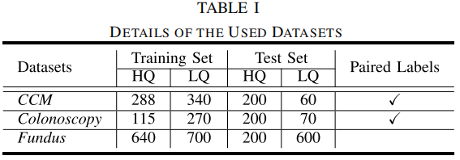
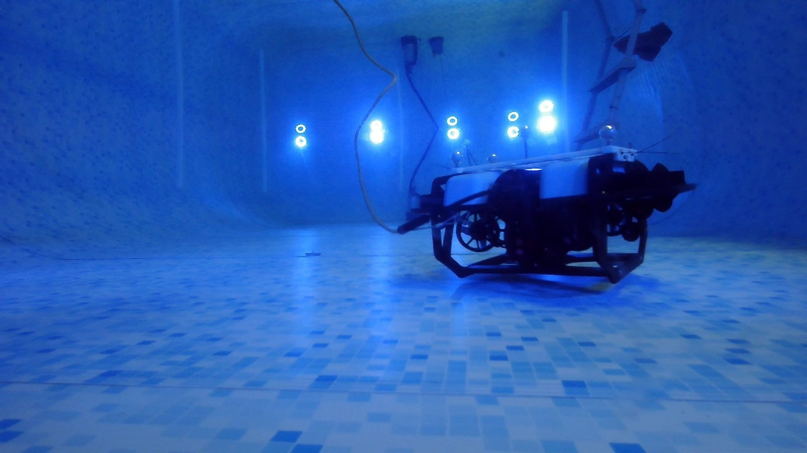
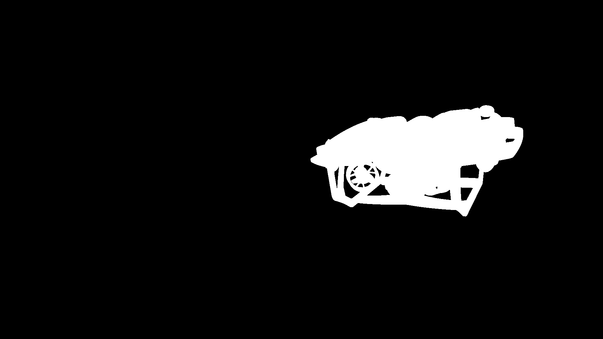
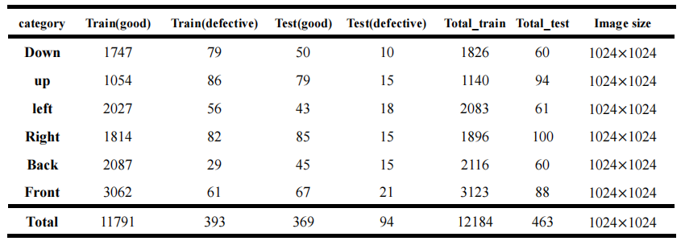

成果产出
数据集目录
For the sake of clarity, we summarize the subjective test configurations in Table. And
the UIQAD can be downloaded at BaiduNetDisk.
Since there are no distortion-free reference images in our database, we adopted the
single stimulus (SS) image quality assessment method to conduct the subjective test,
which is recommended by the International Telecommunication Union (ITU). We invited 16
observers to score each image via a designed scoring graphical user interface(GUI), as
shown in Figure 3. For each image, its quality can be classified into 5 levels: bad,
poor, fair, good and excellent, corresponding to the scores 1, 2, 3, 4 and 5
respectively. We required that the rating time of each image should not exceed 5 seconds
to prevent the observers from being disturbed by other information. In addition, to
avoid accidental touch, we set the ’previous’ button, so that the observer can modify
the rating score of the previous image. Each observer was asked to score continuously
for no more than 30 minutes to prevent inaccurate scores caused by visual exhaustion.
When the subjective experiments were completed, we carried out the process of outliers
detection and removal based on the three-sigma rule of thumb. The final mean opinion
score (MOS) of each image was then computed by averaging the remaining scores. Figure 4
shows the MOS distribution. We can observe that the MOS values span the quality scale
[1, 5] and spread at different visual levels. The distribution is close to the Gaussian
distribution, with most of the score values between 3.0 and 4.0.
1. Underwater Image Database
Underwater Image Quality Assessment Database(UIQAD) contains 3035 underwater images, of
which 30% are collected by ourselves via the deep-sea photography equipment, and 70% come
from the four public under water image databases that are initially constructed for other
vision tasks. The image resolution of the images varies from 416 × 360 to 3840 × 2160.
Distortions on all images are authentic. We present some sample images from the UIQAD
database, ranging from 1 to 5 quality levels. 
Prior to scoring these images, we specially trained these observers via a training
session in Figure 3 to avoid being affected by the size of the image. The evaluation of
image quality mainly invoves three aspects: clarity, content discrimination and color
deviation.
For the fine-grained dataset, we take the following regulations into account for our
dataset acquisition. We give the flowchart of the process shown in Figure. We summarized
the comparison of FineDance and existing 3D dance datasets in the Table blow.
2. Fine-grained Choreography Dance Dataset
We introduce a Fine-grained Choreography Dance dataset(FineDance). It comprises over 14.6
hours of data collected from 346 paired songs and dances, was created by 27 professional
dancers and a motion capture system, which has accurate body and hand motions. The
fine-grained 22 dance genres of FineDance spanning traditional and modern styles, which make
the genre-matching of generated dance sequences and given music become more challenging. The
part(7.7 hours) of FineDance dataset can be downloaded at BaiduNetDisk.
Fine-grained motions. Our data store the information of the skeleton joints
in 3D space in each frame including fingers, which can help to improve the artistry and
reality of the dance motion. For easy to utilize, we use the standard 52 joints to
represent the dance data.
Fine-grained dance genres. We improve the diversity of our dataset from two
aspects: more genres and more dancers. Our FineDance is reasonably classified under the
advice of dance artists, covering hip-hop and Chinese classical dance more completely.
To the best of our knowledge, it also includes folk dance motions for the first time,
expanding the dance genres of the choreography dataset. Totally, FineDance has up to 22
genres of dance defined by professional dance artists. And we obtained more than 14
hours of data. It is worth noting that FineDance contains the most genres. Details are
given in the supplementary materials.
Accurate posture. In FineDance, all motions are captured by the Vicon optical
motion capture system and retargeted to a standard skeleton in MotionBuilder by
engineers. Therefore, FineDance can donate accurate postures. Moreover, FineDance will
be the largest fully available 3D musicdance paired dataset, and it will be available.
Well-paired dance and music. Dance fragments are strongly associated with the
rhythm and style of music. However, due to the lack of enough well-paired data, the
generative model is hard to fit the relevance of the motion rhythm and music rhythm.
Therefore, we asked the professional dancers to pay attention to the matching of rhythm
and style when dancing.
Professional dancer. We invited 27 professional dancers, and each dancer was
asked to dance to the music while his/her motions were captured utilizing the capture
system.
3. Sewer Defect Detection Dataset
Surface defect detection is a crucial step to guarantee industrial production quality. The
defects not only influence the appearance but also harm the fatigue strength and wear
resistance of products. If the defective products are not discovered timely, it probably
results in a major safety accident and economic loss.
We release Sewer Defect Detection Dataset (SEDD) dataset used in this paper. The SEDD
contains 7563 images with a resolution of 1920 × 1080. It collects sewer pipeline images of
three typical surface defects crack, root, and deposit. One distinct characteristic of SEDD
is that it has a high proportion of defect-free images (nearly two-thirds), which makes the
detection scene more consistent with the real world. Here are some examples about ground
truth of three defective images from the SEDD dataset. Download the dataset from BaiduNetDisk.
Index Terms: Bi-level optimization(BLO), High-quality(HQ), Low-quality(LQ).

4. Fundus and Colonoscopy Datasets
Due to the variability of light transmission and clinical imaging conditions, medical images
often exhibit uneven illumination or blurry texture details. These low-quality (LQ) images
can significantly impede automated disease screening, examination, and diagnosis. Medical
image ehancement aims to transform an LQ image to a high-quality (HQ) one that fulfills the
modality-specific HQ definitions, such as enhanced illumination quality and texture details.
We employ three datasets, i.e., the CCM dataset, the Fundus dataset, and the Colonoscopy
dataset, to evaluate enhancement performance under complex degeneration conditions. CCM
dataset is publicly available, while Fundus and Colonoscopy datasets are the private
datasets collected and relabeled by our collaborative clinicians into HQ and LQ subsets from
the iSee dataset and the CVCEndoSceneStill dataset, Fundus dataset is used for training the
compared networks with 640 HQ images and 700 LQ images. Details of the three datasets are
presented in Table I. Note that CCM and Colonoscopy contain paired segmentation labels for
the HQ and LQ images, which enables us to quantitatively evaluate the enhancement quality by
taking segmentation as the downstream task and retrain our framework with the proposed
cooperative training strategy for a BLO. Download the dataset from BaiduNetDisk.


5. ROV6D
We introduce a benchmark dataset, ROV6D, for 6D pose estimation of remotely operated
vehicles (ROVs). The proposed dataset includes the training synthetic data generation and
the testing data collection in both a pool and the open lake at Maoming, totally 3985 images
and related ground-truth poses. The training subset consists of a large number of synthetic
images with 6D ground-truth poses. The testing subsets, including the Pool subset and
Maoming subset, focus on challenging cases with various levels of occlusion and visibility.
Our dataset ROV6D can be found in the BaiduNetDisk.

6. Engine surface defect data
Engine surface defect data set contains six structural surface, the table below gives the
details of each structural surface sample number, the training set and test set include
normal pictures and pictures with defects, pixel level annotation of each picture are
included, which named as original_name_GT.png, normal image as zero(pure black), the defect
images mark red for pits, green for holes, and yellow for scratches. Download the dataset
from corresponding link BaiduNetDisk.